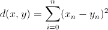
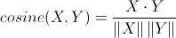
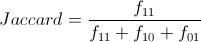

Similarity metrics simply quantify how similar one data point is to another. This could be distance in space, how many matching attributes each data point has or how close those attributes are based on each other. The end goal is to compare 2 points and have a number representing how related they are. Different similarity metrics are useful for different tasks. Some are good for sparse market basket data, some are better for physical space. Because the input and output from the metrics is the same for the different metrics, they can be switched out in algorithms without much additional effort to produce different results.
This similarity metric is finding the distance in Euclidian space between two objects. This is great for measuring distance in physical space. It is also good for continuous data. The Euclidian distance is the same as finding the distance between 2 points on a graph, it is just extended to however many dimensions you need.

#Ruby Implementation
#input is 2 arrays with numerical entries
def euclidian_distance( point1, point2 )
Math.sqrt([point1, point2].transpose.map{|x,y| (x.to_f-y.to_f)**2}.reduce(0, :+))
end
Mathematically cosine similarity is determining the angle between two vectors. If data can be represented as a vector, we can compare the similarity. This is great for comparing documents to see if they are talking about the same topic. A document vector is created, by counting the occurrences of words in each of the documents. Finding the angle between the two vectors can show how similar they are. The cosine similarity of two vectors is simply:

#Ruby Implementation
#Calculates the cosine simularity. This looks at the angle between 2 vectors represented as arrays
def cosine_similarity(dis,dat)
dis_length = Math.sqrt(dotproduct(dis,dis))
dat_length = Math.sqrt(dotproduct(dat,dat))
(dotproduct(dat,dis)) /(dis_length * dat_length)
end
#Helper function to calculate the dot product between 2 vectors represented as arrays
def dotproduct( first , second)
[first,second].transpose.map{|x,y| x*y}.reduce(:+)
end
This similarity metric is great for market basket data. The classic example of this is that when two purchases are made at the store, if you consider what is not bought between the two purchases they are probably almost identical. Jaccard only considers the times when some thing was actually purchased, not when it was not purchased.
#Ruby Implementation # Gives the Jaccard coefficient given two arrays of boolean def jaccard_coefficient(dis,dat) matching_attributes = 0.0 denominator =0 [dis,dat].traspose.each do |x,y| denominator+=1 if (x==true) && (y==true) matching_attributes +=1 if (x==y && x!=true) end matching_attributes/denominator end
Equations generated using http://www.codecogs.com/latex/eqneditor.php